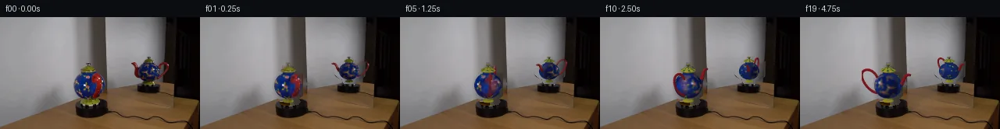

![首帧]()

Round 00
2026-11-05T13:45:08.026897+00:00像素候选变化代码 +303/−0inspection 更新
pixels 42aeb4e4028aefec · code d0eb5bfdcf6dba51
查看本轮 generate.py 真实 diff
--- previous/generate.py
+++ current/generate.py
@@ -0,0 +1,303 @@
+"""Local pixel reconstruction. No external models, engines, references or network."""
+from pathlib import Path
+import json
+import numpy as np
+import cv2
+from scipy.ndimage import gaussian_filter
+from PIL import Image, ImageDraw
+import artifact_io
+
+ROOT=Path(__file__).resolve().parent
+TMP=ROOT/'.tmp'; TMP.mkdir(exist_ok=True)
+SRC=np.array(Image.open(ROOT/'first_frame.png').convert('RGB'))
+S=3
+VIEWS=[dict(name='real',cx=112.2,cy=87.5,sx=17.7,sy=19.0,elev=.23,theta=-60.,parity=1,roi=(79,49,149,115)),
+ dict(name='mirror',cx=190.4,cy=69.0,sx=13.0,sy=12.5,elev=.20,theta=180.,parity=-1,roi=(161,47,222,88))]
+
+def basis(v,angle):
+ th=np.deg2rad(v['theta']-angle); e=v['elev']; c,s=np.cos(th),np.sin(th)
+ right=np.array([c,0,s])*v['parity']
+ up=np.array([s*np.sin(e),np.cos(e),-c*np.sin(e)])
+ view=np.array([-s*np.cos(e),np.sin(e),c*np.cos(e)])
+ return right,up,view
+
+def project(p,v,angle=0):
+ r,u,d=basis(v,angle)
+ return v['cx']+v['sx']*(p@r),v['cy']-v['sy']*(p@u),p@d
+
+# Manually traced silhouettes use only the original scene input, and leave supports intact.
+POLYGONS=[[(110,58),(115,58),(116,62),(119,64),(121,68),(125,71),(130,72),(134,77),(136,85),(134,95),(130,101),(126,104),(128,108),(126,112),(109,114),(102,111),(102,106),(98,101),(95,96),(93,90),(93,84),(95,78),(99,73),(102,70),(102,66),(106,66),(107,63),(110,62)],
+ [(189,50),(195,51),(195,54),(199,56),(202,58),(207,57),(213,57),(216,60),(217,64),(215,69),(211,75),(206,79),(201,81),(200,85),(186,87),(183,84),(182,80),(176,77),(172,73),(172,68),(171,63),(166,59),(168,57),(173,58),(177,63),(177,59),(182,56),(188,55)]]
+mask=np.zeros((144,256),np.uint8)
+for poly in POLYGONS: cv2.fillPoly(mask,[np.array(poly,np.int32)],255)
+# Keep the stationary platforms. Small ceramic feet are removed and rendered again.
+mask[114:,:]=0
+mask[88:,160:]=0
+# The foreground object's backdrop lies across the wall/mirror-frame boundary.
+BG=cv2.inpaint(SRC,mask,5,cv2.INPAINT_TELEA)
+# The smooth wall should not inherit ceramic colors from inpainting boundaries.
+for y in range(55,114):
+ for x in range(92,132):
+ if mask[y,x]:
+ # Independently interpolate wall and wooden frame on either side of x=116.
+ if x<115:
+ xl,xr=88,114
+ left=SRC[y,xl].astype(float)
+ # A stable clean wall reference above the teapot; preserve wall gradient.
+ right=SRC[max(8,y-47),xr].astype(float)
+ # Vertical illumination variation estimated at unobstructed x=88.
+ right += SRC[y,88].astype(float)-SRC[max(8,y-47),88].astype(float)
+ f=np.clip((x-xl)/(xr-xl),0,1)
+ BG[y,x]=np.clip((1-f)*left+f*right,0,255)
+ else:
+ # Frame is approximately vertically uniform, with a stationary vertical texture.
+ yy=max(8,y-49)
+ val=SRC[yy,x].astype(float)
+ gain=np.mean(SRC[y,138].astype(float))/max(1,np.mean(SRC[yy,138]))
+ BG[y,x]=np.clip(val*np.clip(gain,.85,1.15),0,255)
+# Mirror backdrop: vertically smooth gray/brown surface, with the dark doorway fixed.
+for y in range(49,86):
+ for x in range(165,218):
+ if mask[y,x]:
+ xa=160 if x<210 else 218
+ anchor=SRC[y,xa].astype(float)
+ ref=SRC[max(10,y-40),x].astype(float)
+ refa=SRC[max(10,y-40),xa].astype(float)
+ BG[y,x]=np.clip(ref+anchor-refa,0,255)
+
+# Source texture cleanup prevents red handles/spouts being painted onto the ceramic body.
+clean=SRC.copy()
+for v in VIEWS:
+ yy,xx=np.mgrid[:144,:256]; dx=(xx-v['cx'])/v['sx']; dy=(yy-v['cy'])/(v['sy']*.88)
+ region=dx*dx+dy*dy<1.05
+ red=(SRC[:,:,0]>SRC[:,:,1]*1.45)&(SRC[:,:,0]>SRC[:,:,2]*1.20)
+ bad=region&red&((xx>v['cx']+5)|(yy<v['cy']-8))
+ cm=np.uint8(bad)*255
+ clean=cv2.inpaint(clean,cm,3,cv2.INPAINT_TELEA)
+
+# Atlas is an analytic ellipsoid parameterization, completed with source-derived colors.
+TH,TW=256,512
+lat=(np.arange(TH)+.5)/TH*np.pi-np.pi/2
+lon=(np.arange(TW)+.5)/TW*2*np.pi-np.pi
+la,lo=np.meshgrid(lat,lon,indexing='ij')
+p=np.stack([np.cos(la)*np.sin(lo),.88*np.sin(la),np.cos(la)*np.cos(lo)],-1)
+n=p/np.array([1,.88**2,1]);n/=np.linalg.norm(n,axis=-1,keepdims=True)
+bluepix=SRC[72:102,97:125].reshape(-1,3)
+bluepix=bluepix[(bluepix[:,2]>bluepix[:,0]*1.3)&(bluepix[:,2]>bluepix[:,1]*1.2)]
+BLUE=np.median(bluepix,axis=0).astype(float)
… diff truncated; 216 more lines …